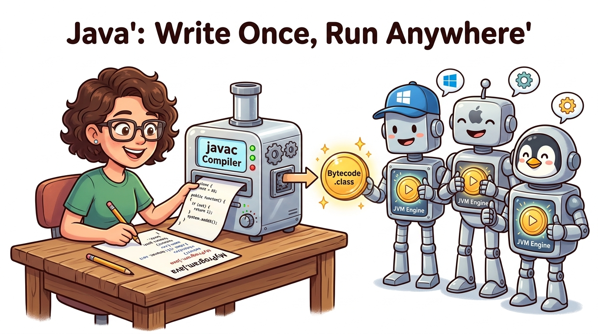

Bridge 1 — Setup: JDK & IntelliJ IDEA
Welcome to your software engineering journey! Before building graphical interfaces or AI-assisted desktop tools, you need a solid developer workstation. Today you will understand what makes Java special, how the Java Virtual Machine (JVM) lets code run on any operating system, and how to write, compile, and run your very first program using IntelliJ IDEA Community Edition.
- Explain the difference between the JDK, JRE, and JVM, and why Java is platform-independent.
- Install and verify OpenJDK 21 LTS on your computer using command-line diagnostics (
java -versionandjavac -version). - Install and configure IntelliJ IDEA Community Edition for clean, modern Java development.
- Write, compile, and execute a canonical
HelloWorld.javaprogram from both the terminal and the IDE. - Deconstruct the exact meaning of every word in
public static void main(String[] args). - Diagnose and fix the top 4 beginner setup and syntax traps (file name mismatch, case sensitivity, missing main method, unconfigured SDK).
Your Learning Roadmap
1. The Java Trinity: JDK, JRE & JVM
When you start learning Java, you immediately run into three acronyms: JDK, JRE, and JVM. Beginners often confuse them, but their relationship is simple and hierarchical — like nested Russian nesting dolls:
- JVM (Java Virtual Machine): The engine that actually executes your program. It reads compiled bytecode and translates it into machine code for the physical CPU under the hood.
- JRE (Java Runtime Environment): The bundle required to run Java programs. It contains the JVM plus standard Java class libraries (like math, text, and networking). (Note: since Java 11, the JRE is integrated directly into the JDK).
- JDK (Java Development Kit): The complete toolbox for software developers. It includes everything in the JRE, plus the compiler (
javac), documentation tools (javadoc), archiver (jar), and debuggers.
| Component | What It Stands For | Who Needs It? | Key Tool Inside |
|---|---|---|---|
| JVM | Java Virtual Machine | Everyone running Java software | Bytecode Execution Engine & Garbage Collector |
| JRE | Java Runtime Environment | End users running programs | Standard Library (java.lang, java.util) + JVM |
| JDK | Java Development Kit | You (The Software Developer) | Compiler (javac), Packager (jar), Debugger |
2. How Java Works: Write Once, Run Anywhere
In languages like C or C++, code is compiled directly into machine instructions tailored to a specific CPU architecture (e.g., Intel x86 or ARM64). A program compiled on Windows will crash or refuse to load on a Mac.
Java solved this problem with a revolutionary invention: Bytecode.
Instead of translating your .java code directly into physical machine code, the Java compiler (javac)
translates it into an intermediate, universal language called Java Bytecode stored in a .class file.
Every operating system has its own custom JVM that reads this exact same bytecode and runs it smoothly!

.java).
The compiler transforms it into an international passport of Bytecode (.class).
Then, friendly local JVM robots on Windows, macOS, and Linux translate those exact same passport instructions into
native machine actions. Write once, run everywhere!
.java files. The compiler javac produces .class bytecode.
The JVM runs the .class bytecode. Your code never talks directly to the hardware — the JVM manages everything.
3. Installing Your Developer Tools
To write professional Java applications, you need two pieces of software installed on your computer:
- OpenJDK 21 LTS: The engine and compiler. We use Java 21 because it is a Long-Term Support (LTS) release used throughout modern industry.
- IntelliJ IDEA Community Edition: The world's leading Java Integrated Development Environment (IDE), free and open-source by JetBrains.
.msi, macOS .pkg, or Linux package).
Run the installer and ensure "Set JAVA_HOME variable" and "Add to PATH" are checked.
cmd, press Enter)
or Terminal (macOS/Linux). Type:
javac -version
java -version21 (e.g., openjdk version "21.0.x").
4. Your First Java Program: Hello, World!
By time-honored programming tradition dating back to 1978, the first program you write in any language simply displays a greeting to the screen. Here is the complete code:
public class HelloWorld {
public static void main(String[] args) {
System.out.println("Hello, Aptech Java Developer!");
}
}5. Deconstructing Every Single Word
Java is an explicitly typed, object-oriented language. Unlike Python or JavaScript where you can just write print("Hello"),
Java requires structure. Let us break down every token so there are zero mysteries:
| Token / Keyword | What It Means in Plain English |
|---|---|
public |
Access Modifier: Anyone, anywhere (including the JVM outside your project) is allowed to access and call this class or method. |
class HelloWorld |
Class Definition: In Java, all code must live inside a class. The file name must match this name exactly: HelloWorld.java. |
static |
Class-Level Method: The JVM can run this method immediately without first creating an instance or object with new. |
void |
Return Type: This method performs actions (like printing text) and finishes without returning any numeric or text value back to the caller. |
main |
Entry Point: The magical name the JVM searches for when starting your application. If a class lacks a main method, it cannot run standalone. |
String[] args |
Command-Line Arguments: An array of text parameters passed into your program if you launch it with extra options from the command line. |
System.out.println(...) |
System is a built-in Java class; out is the standard console output stream;
println is short for "print line" — it writes text to your console and then moves the cursor to the next line.
|
; (semicolon) |
Statement Terminator: Just as an English sentence ends with a period (.), every complete Java instruction ends with a semicolon. |
💻 Interactive Simulator: The Bytecode Pipeline
Use this interactive tool to see what happens step-by-step between typing code on your keyboard and seeing output appear on the screen:
⚠️ Top 4 Beginner Setup Traps & How to Fix Them
// Saved in a file called "hello.java" (lowercase) or "Main.java"
public class HelloWorld { // ERROR!
public static void main(String[] args) {}
}Error Message: class HelloWorld is public, should be declared in a file named HelloWorld.java
The Golden Rule: Java is strictly case-sensitive. The file name on your hard drive must match the public class name letter-for-letter, capitalization included!
System.out.println("Hello World") // Missing semicolon!
// or forgetting a closing curly brace } at the end of the classError Message: ';' expected or reached end of file while parsing
The Fix: Always verify that every opening { has a matching closing }, and every statement ends with a ;.
When opening a new project, a yellow banner might appear across the top of your editor saying "Project SDK is not defined".
The Fix: Click the blue Setup SDK link on the right of the yellow banner, and select 21 (Temurin or OpenJDK). Within 3 seconds, all red underlines will disappear!
📝 Knowledge Check
javac) output after compiling a .java source file?javac compiles human-readable Java code into intermediate bytecode (.class files), which can then be executed by any JVM on any operating system.
javac), debuggers, and developer documentation tools?javac. The JRE and JVM are for running code.
public class StudentRecord, the source file must be named StudentRecord.java exactly. True or False?main method declared as static in Java?ClassName.main() at startup before any objects exist in memory. The static keyword allows the method to be invoked without creating an instance.
🛠 Guided Lab: Workstation Certification
aptech-bridge using JDK 21.
src directory, create a new Java Class named DeveloperProfile.
main method and print a 3-line developer badge containing:
your name, your career goal (e.g. "Future JavaFX & AI Software Engineer"), and today's date.
main and verify clean output in the console.
javac src/DeveloperProfile.java -d out/ followed by java -cp out DeveloperProfile.
📺 Recommended Further Study
A legendary breakdown of compiling, binary code, and CPU execution by David J. Malan.
▶ Watch on YouTubeOfficial quick tour of the IntelliJ editor, shortcuts, project tree, and running code.
▶ Watch on YouTube